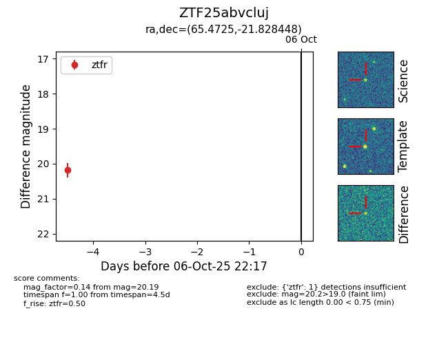

FINK: ZTF25abvcluj
Lasair: ZTF25abvcluj
ALeRCE: ZTF25abvcluj
ZTF25abvcluj (ztf,fink)
equatorial (ra, dec) = (65.4725,-21.82845)
galactic (l, b) = (218.6536,-42.15968)

last ztfr=20.19
1 ztfr detections